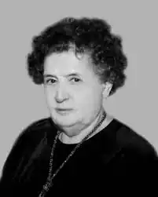

Марія-Анна Голод (до шлюбу Прокопович) — українська поетеса, прозаїк, гумористка, сатирик, літературознавиця.
Народилася 16 січня 1917 р. у Львові в родині священика УГКЦ. Тут закінчила гімназію Сестер василіянок та дворічні торговельні студії.
Пережила радянську та німецьку окупацію, 1944 р. емігрувала, перебувала у Німеччині як "переміщена особа". З 1948 р. мешкала в Едмонтоні до 1952, потім у Торонто (Канада), де здобула вищу освіту. Студіювала історію мистецтв та антропологію в Торонтському університеті. Працювала рахівницею у банку, потім — діловодкою при бібліотеці Торонтського університету, організатором для Світового конгресу вільних українців. Була головою Торонтського відділення Об'єднання українських письменників "Слово". Лауреатка премії імені Лесі Українки (1999). Померла 7 листопада 2003 р. у Торонто. Авторка поетичних збірок "Чотири пори року. Поезії 1972—1976" (Мюнхен — Нью-Йорк, 1978), "Стрімка моя вулиця" (1988) та збірки оповідань "Янгол у наймах. Старосвітські легенди" (1995) за мотивами галицьких леґенд. За збірку прозових творів "Люстра пана Севастьяна" (Київ, 1998) у 1999 р. стала лауреаткою Літературної премії імені Лесі Українки. Серед її оповідань, зокрема, "Як Михайло з духами розмовляв" про свого вуйка о. Михайла Туркевича — пароха с. Пониковиця, "Студент".